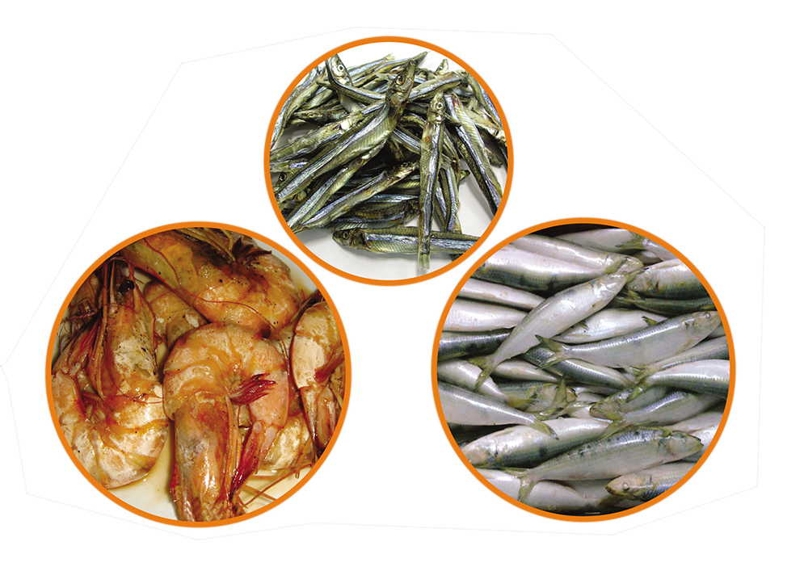

අයඩීන් ඌණතාවය නිසා ඇතිවන ආබාධ
ලෝකයේ බහුලව පවතින වැළැක්විය හැකි මොළයේ අබාධ හානි සහ මන්දබුද්ධික භාවය ඇතිවිමට ප්රධානතම සාධකය වී
ඇත්තේ අයඩීන් ඌණතාවයයි.එම ඌණතාවය නිසා දරැවන්ගේ කායික හා මානසික වර්ධනය අඩාල වේ.ගැබිණි සමයේ අයඩීන්
ඌණතාවයක් ඇති වුවහොත් ගබ්සාවන්,අජීවි උපත් සහ උපතේ සිට පැවතෙන ආබාධ ඇතිවිය හැකිය.මද අයඩීන් ඌණතාවයක්
වුවද බුද්ධිමය වර්ධනයට බලපෑ හැකිය.
අයඩීන් ඌණතාවයට මුලිකවම හේතුවන්නේ ආහාරවල අයඩීන් හිඟකමයි.ආහාර වල ගොයිට්රාකාරක ද්රව්ය (Goitrogens)
පැවතීමද ඌණතාවය ත්රීවි කිරිමට බලපෑ හැකිය.ගෝවා මල් ගෝවා වැනි බ්රසිකා කුලයේ ශාක වල හා මඥ්ඥොක්කා වල
ගොයිට්රාකාරක අඩංගු වේ.වායු ගෙඩි හෙවත් ගලගණ්ඩය මඟින් බොහෝ විට අයඩීන් ඌණතාවය හඳුනාගනු ලැබේ.

1990 දශකයේ මුල් භාවයේ හදුන්වාදෙන ලද ලුණු අයඩීන්කරන වැඩසටහන මඟින් ශ්රී ලංකාවේ අයඩීන් ඌණතාවය පිළිබඳ
ගැටළුවලට සාර්ථකව පිළිතුරු ලැබෙන බව පෙනියයී. අවසන් වරට සිදු කල ජාතික අයඩීන් ඌණතා සමීක්ෂණයේ (2005)
ප්රතිථල අනුව ශ්රී ලංකාවේ අයඩීන්ඌණතා ගැටළුව ප්රමුඛව ඇත්තේ පළාත් 03ක පමණි.(බස්නාහිර,මධ්යම සහ ඌව)
ඒ පළාත්වල හැරුණු කොට අනිකුත් පළාත්වල අයඩීන් ඌණතා ප්රශ්ණය එතරම් උග්ර නොවේ.
තවද උතුරු හා උතුරු මැද පළාත්වල ළමුන්ගේ මුත්රා සාම්පල පරික්ෂා කිරිමේ දී අයඩීන් වැඩිපුර අඩංගු බව වාර්තා වී ඇත.
අයඩින් මීශ්ර ලුණු සහ අයඩීන් අඩංගු ආහාර පරිභෝජනය අයඩීන් ඌණතාවය මඟහරවා ගැනිමට හැකි ඉතාමත් ලාභදායී හා ඵලදායී විසඳුමකි.